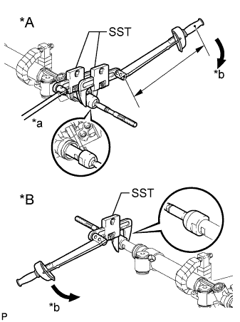
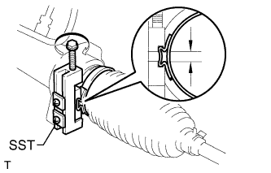
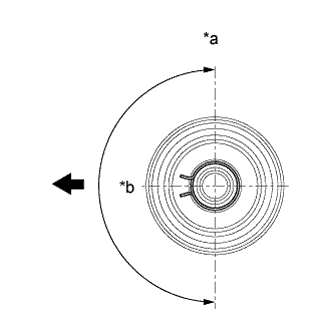

STEERING GEAR > REASSEMBLY |
| 1. INSTALL STEERING RACK END SUB-ASSEMBLY |
Temporarily install the 2 steering rack ends to the steering rack.
Fill up the ball joints of the steering rack ends with MP grease.
|  |
Using SST, install the steering rack end (RH side) to the steering rack.
| *A | LH Side |
| *B | RH Side |
| *a | Hold |
| *b | Turn |
Using SST and a wrench, install the steering rack end (LH side) to the steering rack.
| 2. INSTALL NO. 2 STEERING RACK BOOT |
Apply silicon grease to the inside of the small opening of the boot.
Install the 2 boots to the groove on the rack housing.
| 3. INSTALL NO. 1 STEERING RACK BOOT |
| 4. INSTALL STEERING RACK BOOT CLAMP RH |
|  |
Using SST, install a new boot clamp as shown in the illustration.
| 5. INSTALL STEERING RACK BOOT CLAMP LH |
| 6. INSTALL STEERING RACK BOOT CLIP RH |
|  |
Using pliers, install the boot clip.
| *a | Upward |
| *b | 180° |
 | Front of Vehicle |
| 7. INSTALL STEERING RACK BOOT CLIP LH |
| 8. INSTALL STEERING GEAR OUTLET RETURN TUBE |
Using a union nut wrench, install the return tube to the steering gear.
| 9. INSTALL TURN PRESSURE TUBE |
Apply steering fluid to 2 new O-rings. Using a union nut wrench, install the 2 O-rings and turn pressure tube LH.
Apply steering fluid to 2 new O-rings. Using a union nut wrench, install the 2 O-rings and turn pressure tube RH.
| 10. INSTALL TIE ROD END SUB-ASSEMBLY LH |
Align the matchmarks of the tie rod and rack end, and temporarily install the tie rod with the lock nut.
| 11. INSTALL TIE ROD END SUB-ASSEMBLY RH |